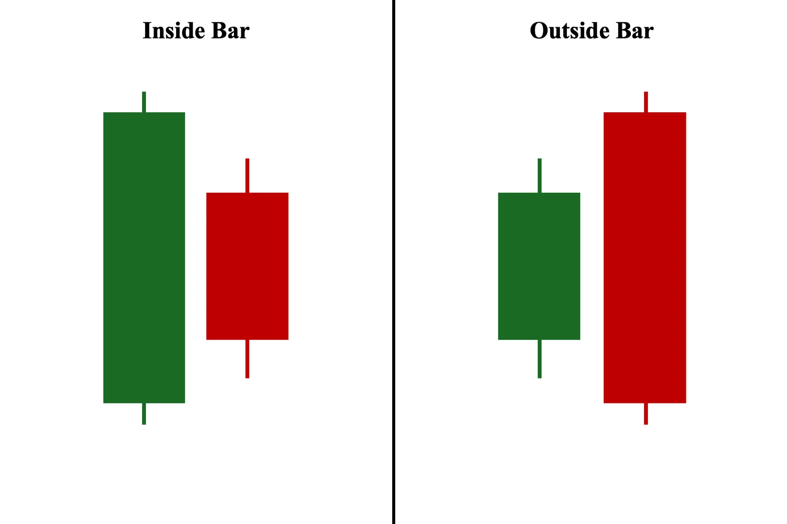
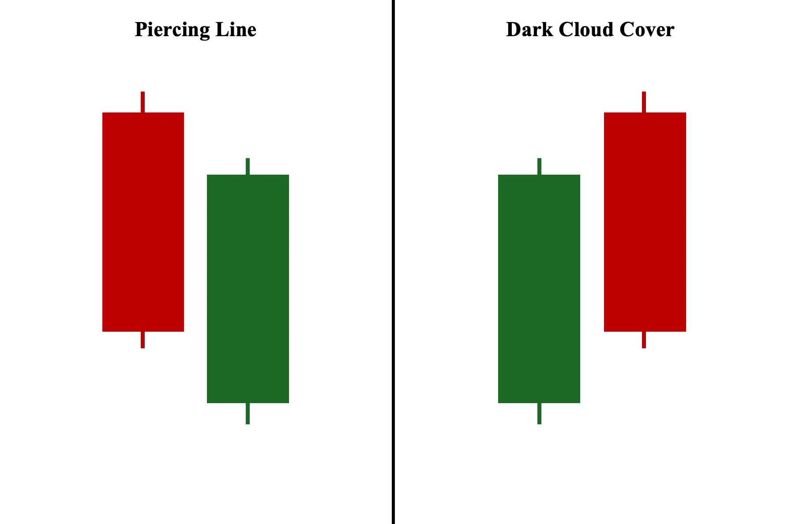

Бичо поглъщане
- Първата свещ е меча.
- Втората е бича и тялото ѝ покрива тялото на първата.
- След спад може да подсказва засилване на купувачите.
Двойните модели се състоят от две последователни свещи. Те показват как контролът може да се промени между купувачите и продавачите. Важни са редът, телата, фитилите и контекстът преди модела.
Втората свещ има тяло, което покрива тялото на първата.
Две свещи с върхове или дъна на близки цени.
След покачване две свещи достигат сходна най-висока цена. Може да показва, че районът се отхвърля.
След спад две свещи достигат сходна най-ниска цена. Може да показва, че купувачите защитават областта.
Тук сравняваме целия диапазон на двете свещи, не само телата.
Втората свещ има High по-нисък и Low по-висок от диапазона на първата. Това показва свиване на движението и временна пауза.
Може да се използва за наблюдение на пробив, но посоката не е известна предварително.
Втората свещ има High над High на първата и Low под Low на първата. Диапазонът се разширява и волатилността е по-висока.
Посоката на затваряне и пазарният контекст помагат за тълкуването.

Модели на потенциално отслабване на предишното движение.
Класическите описания често включват ценова междина при отваряне. При пазари, които се търгуват почти непрекъснато, например валутни CFD, такива междини може да липсват. Затова наблюдавай основната форма и затварянето, а не разчитай само на gap.

Нито един двоен свещен модел не е автоматично „по-надежден“ във всички ситуации. Резултатът зависи от инструмента, таймфрейма, контекста и правилата за вход и изход.